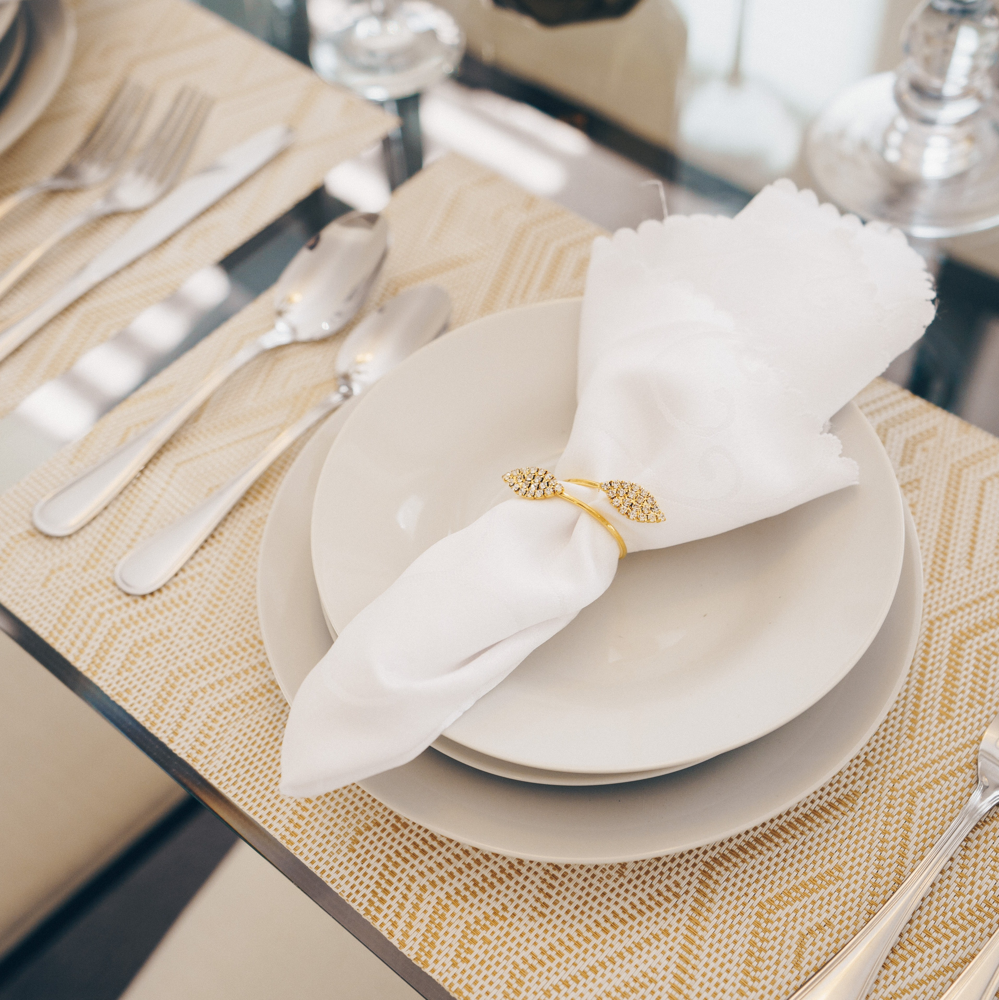
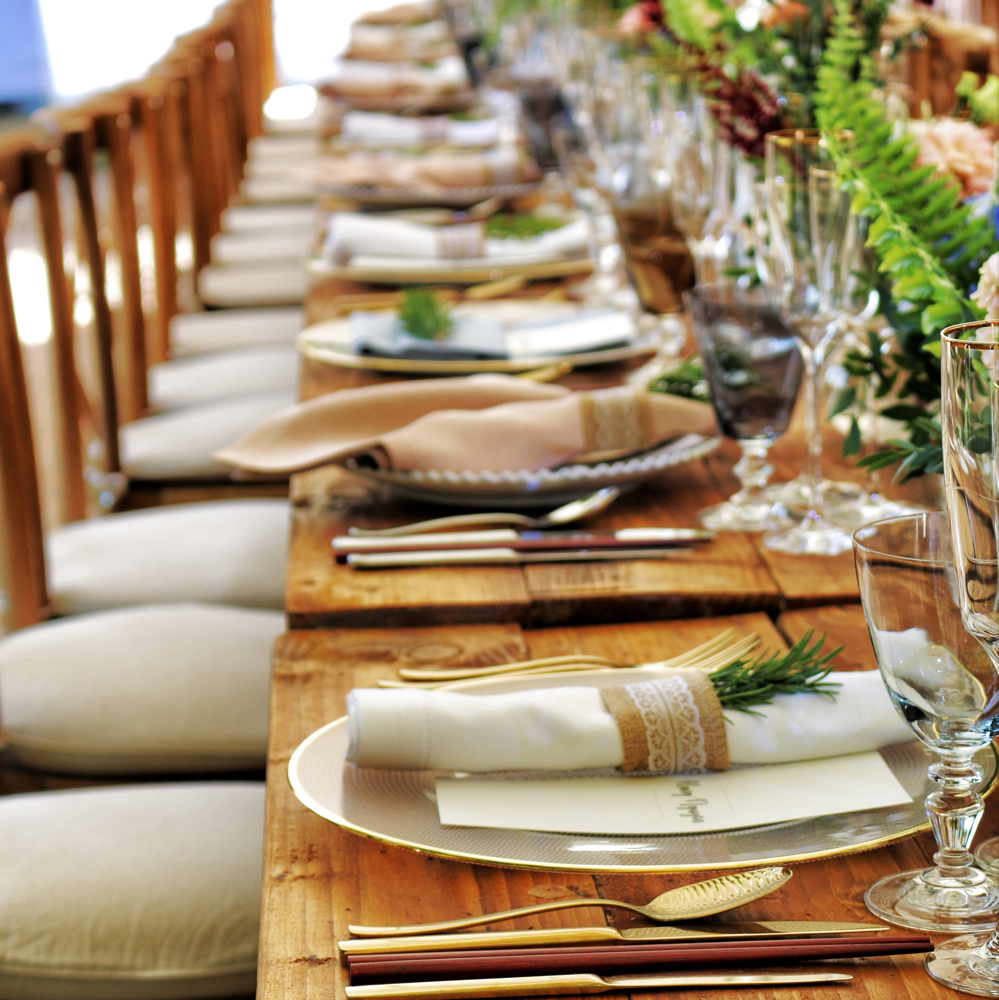
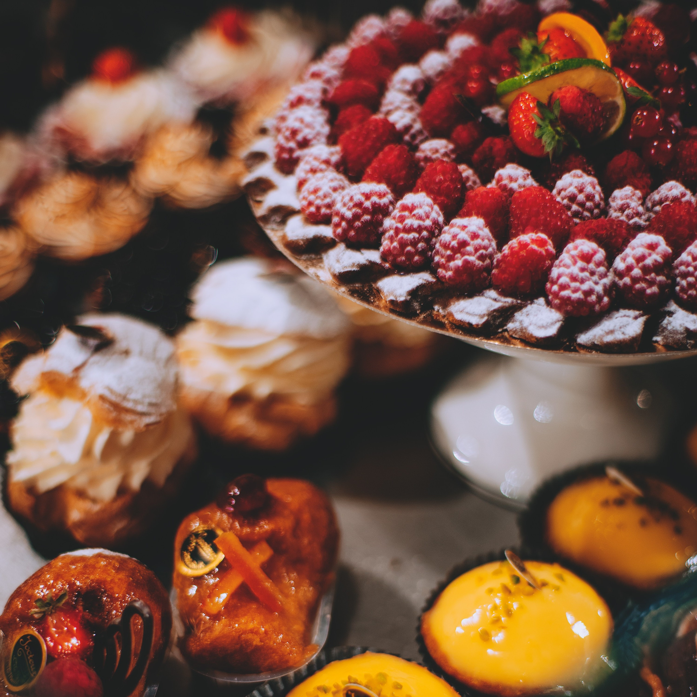

Ofrecemos servicios de catering para eventos corporativos, como
reuniones, conferencias y presentaciones.Nuestro menú incluye una variedad de opciones
para satisfacer los gustos y preferencias de todos los invitados.

Catering para bodas
Haz de tu día especial algo inolvidable con nuestro servicio de
catering para bodas. Nuestro equipo
profesional se encargará de crear un menú personalizado que refleje tu estilo y deleite
a tus invitados.

Catering para Eventos Sociales
Desde fiestas de cumpleaños hasta celebraciones familiares, nuestro
catering para eventos sociales está
diseñado para brindar una experiencia culinaria excepcional. Disfruta de una selección
de platos
deliciosos y creativos.

Catering Dulce
¿Tienes un gusto por lo dulce? Nuestro catering dulce te ofrece una
amplia variedad de postres y dulces exquisitos. Desde pasteles y tartas hasta cupcakes y
galletas decoradas, te deleitaremos con nuestras creaciones dulces.
Catering para Cenas Privadas
Si deseas disfrutar de una experiencia gastronómica exclusiva en la
comodidad de tu hogar, nuestro
servicio de catering para cenas privadas es la opción perfecta. Nuestro chef preparará
un menú
personalizado según tus preferencias
Catering temático
¡Haz que tu evento sea realmente especial con nuestro catering
temático! Ofrecemos opciones temáticas únicas, desde fiestas tropicales hasta cenas de
época. Nuestro equipo se encargará de todos los detalles para crear una experiencia
inmersiva.